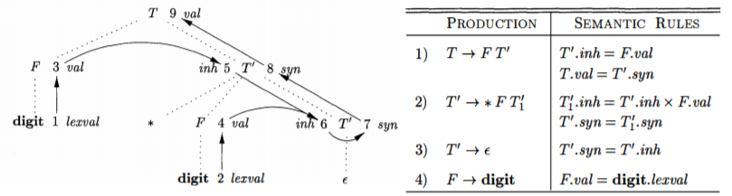

2. SDD and SDT
1. SDD 的属性
每个结点都带有属性值的分析树称为注释分析树。
- 分析树结点 $\small N$ 上非终结符的综合属性 (
synthesized ) 由 $\small N$ 的子结点或它本身的属性值定义 - 终结符的综合属性是由词法分析器提供的属性值
- 分析树结点 $\small N$ 上非终结符的继承属性由 $\small N$ 的父结点、$\small N$ 的兄弟结点或它本身的属性值定义
- 只由本身定义算作综合属性
2. SDD 的求值顺序
(1). 依赖图
依赖图把注释分析树的属性作为结点，通过有向边指明依赖关系
- 通常把继承属性画在文法符号左边，综合属性画在右边
- 副作用语法规则应表示为一个虚结点

确定了依赖图后，就可以通过拓扑排序进行求值。但对于同时具有综合属性和继承属性的
(2). S-SDD 和 L-SDD
S-SDD 可以按照语法分析树的自底向上的顺序计算属性值
- $\small A$ 的继承属性
- $\small X_i$ 左边的符号的属性，即 $\small X_1,\ ...\ ,X_{i-1}$
- $\small X_i$ 本身的属性，但 $\small X_i$ 的所有属性不能形成环路
3. SDD 转化为 SDT
- 直接将每个语义动作放置在产生式的最右端即可
- 将计算某个非终结符 $\small A$ 的继承属性的动作插入到产生式右部中 $\small A$ 的本次出现的之前的位置
- 将计算产生式左部符号的综合属性的动作放置在产生式最右端
4. 在语法分析过程中进行语义翻译
(1). $\small\mathrm{LR}$ 分析 + S-SDD
如果
实现方法为，将 $\small\mathrm{LR}$ 栈的二元组扩展为三元组，即增加一个属性栈
- 移入时，状态、终结符和终结符的属性一同入栈
- 归约时，根据属性栈顶的元素执行语义动作，然后弹出相应元素，最后新的状态、非终结符、计算出的属性入栈
(2). 非递归 $\small\mathrm{LL}$ 分析 + L-SDD
为实现
- 动作记录: 表示记录在形如 $\small A\to \lbrace a_{i1}\rbrace\ X_1\ ...\ \lbrace a_{in}\rbrace\ X_n\ \lbrace a_{syn}\rbrace$ 中的语义动作
- 按照在产生式中的顺序，同文法符号一起入栈
- 暴露在栈顶时执行相应动作，计算过后出栈
- 继承属性记录: 和原始 $\small\mathrm{LL}$ 分析栈的文法符号对应
- 按照在产生式中的顺序入栈
- 被扩展时出栈，如果对应的非终结符有继承属性，那么它被扩展时它前面的动作记录已经执行，因此继承属性值已被计算
- 出栈时，需要把它的值拷贝到栈中的兄弟动作记录中，以及将要被扩展入栈的动作记录中
- 综合属性记录: 原始 $\small\mathrm{LL}$ 分析栈的文法符号在被扩展后就出栈了，但综合属性只能在被扩展的结点都出栈后计算，因此在栈中额外维护此记录
- 按照在产生式中的顺序，和继承属性一起入栈，排在继承属性记录的后面
- $\small\lbrace a_{syn} \rbrace$ 执行后出栈
- 出栈时，需要把它的值拷贝到栈中的兄弟动作记录中
(3). 递归 $\small\mathrm{LL}$ 分析 + L-SDD
- 改写对终结符的调用，形参传入继承属性，返回综合属性
- 同一产生式体被引用的信息通过临时变量存储
(4). $\small\mathrm{LR}$ 分析 + L-SDD
给定一个 $\small\mathrm{LL}$ 文法的
- 把包含继承动作的产生式, 即形如 $\small A\to \alpha_1\ \lbrace X_i.\mathit{a}=...\rbrace\ \ X_i\alpha_n$, 改写为 $\small A\to \alpha_1 MX_i \alpha_n$ 和 $\small M\to\varepsilon\ \lbrace M.a=...\rbrace$，把 $\small X_i$ 的继承属性改写为 $\small M$ 的综合属性
- 计算 $\small M.a$ 所需的 $\small A$ 或 $\small\alpha$ 的属性值一定在栈底的已知位置
- $\small A$ 的继承属性作为栈元素 $\small M_A$ 存放在 $\small\alpha_1$ 的相邻位置
- $\small M$ 的计算结果作为 $\small M$ 的综合属性存放于栈中